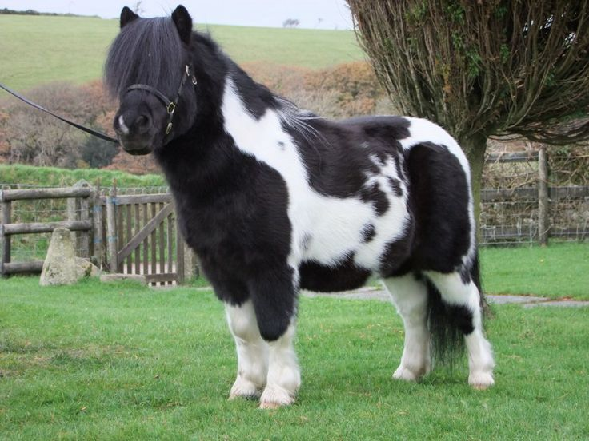

DÉCOUVERTE

Shetland : le petit poney au grand cœur
Derrière son allure de peluche indestructible, le Shetland cache une histoire de survie et d’ingéniosité. Son nom vient des îles Shetland, archipel du nord de l’Écosse : l’étymologie remonte au vieux norrois Hjaltland, hérité des Vikings, devenu “Shetland” au fil des siècles. Né sur une terre pauvre, battue par le vent, ce petit poney a développé une robustesse hors norme et une intelligence parfois malicieuse. Pourquoi est-il si puissant pour sa taille, si populaire en club, et pourtant si exigeant à gérer au quotidien ?